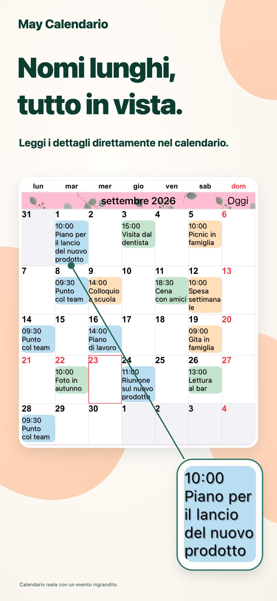
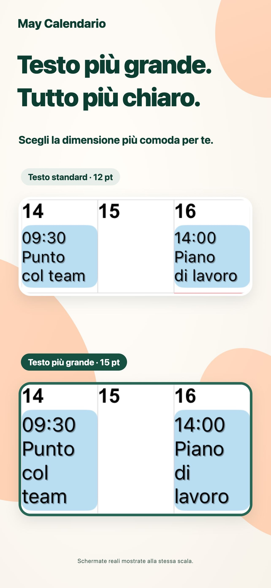
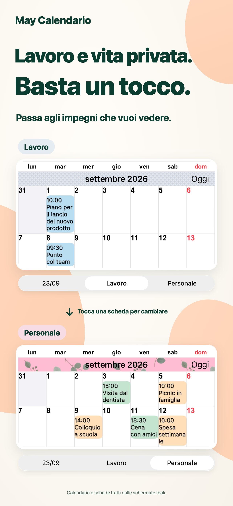
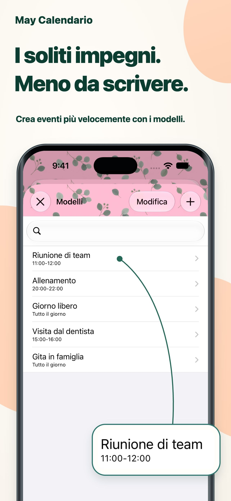

Uno stile tutto tuo.
Combina colori del tema, sfondi e motivi per creare il tuo calendario.
Ogni giorno, più chiaro.
Titoli lunghi direttamente nella vista mensile. Testo e colori come piacciono a te, per vedere gli impegni a colpo d’occhio.
Per iPhone e iPadVedi su App StoreDownload gratuito · Acquisti in-app

Organizzare la giornata è un po’ più semplice.
Lavoro e vita privata, nello stesso posto.PER LA TUA QUOTIDIANITÀ
Adatta il calendario al tuo modo di organizzarti.
I titoli lunghi vanno a capo su più righe. Regola carattere e dimensioni per leggere i dettagli senza perdere di vista il mese.

Salva combinazioni di calendari e passa dagli impegni di lavoro a quelli personali con un tocco.

Salva riunioni, allenamenti e appuntamenti come modelli. Tocca due volte una data e scegli un modello per aggiungere un evento.

PICCOLI DETTAGLI, GRANDE DIFFERENZA.
Combina colori del tema, sfondi e motivi per creare il tuo calendario.
Scegli tra 20 tipi di widget, inclusi quelli esclusivi per iPad.
Mostra solo gli eventi che corrispondono al testo inserito.
DOMANDE E RISPOSTE
Il download è gratuito e sono disponibili acquisti in-app. Consulta App Store per prezzi e opzioni aggiornati. Vedi su App Store
Sì, su iPhone e iPad. Alcuni widget sono esclusivi per iPad. Consulta App Store per i requisiti di sistema aggiornati.
Supporta promemoria, festività, numeri delle settimane e informazioni del calendario lunare. Puoi impostare il primo giorno della settimana e il fuso orario.
Le notifiche vengono inviate dall’app Calendario di Apple. Puoi impostare avvisi prima dell’inizio o della fine di un evento.
GIORNATE PIÙ CHIARE.
Inizia con un calendario adatto a te.